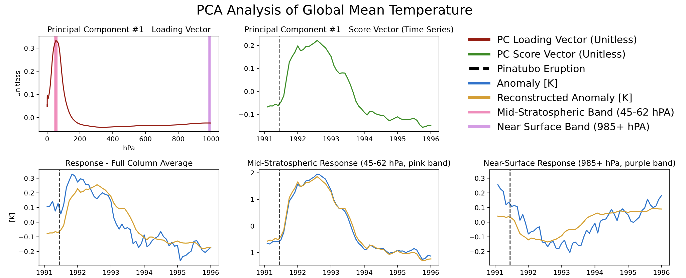
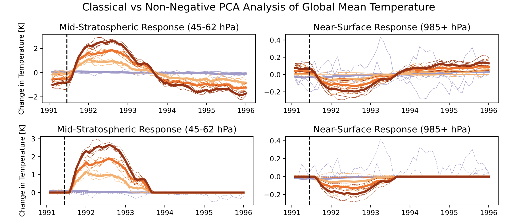
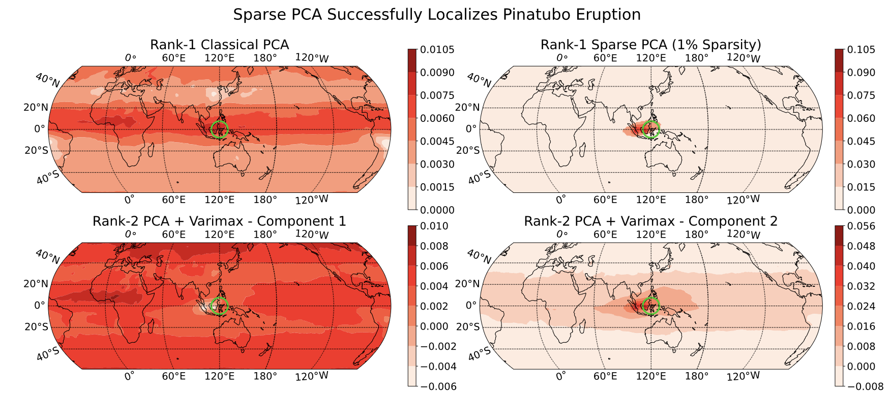
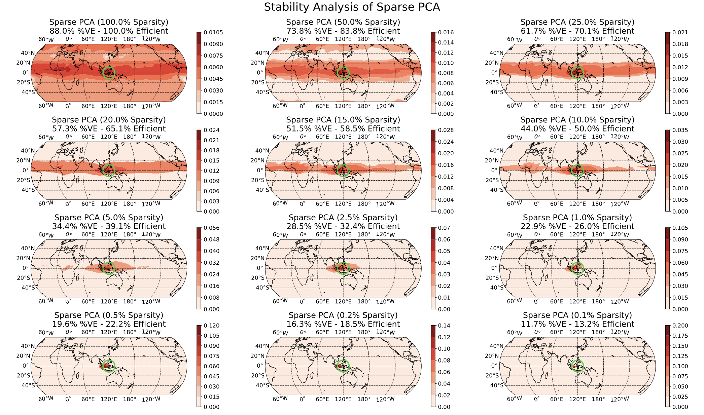

STA 9890 - Unsupervised Learning: I. Introduction
\[\newcommand{\R}{\mathbb{R}} \newcommand{\E}{\mathbb{E}} \newcommand{\V}{\mathbb{V}} \newcommand{\P}{\mathbb{P}} \newcommand{\C}{\mathbb{C}} \newcommand{\bbeta}{\mathbb{\beta}} \newcommand{\bone}{\mathbb{1}} \newcommand{\bzero}{\mathbb{0}} \newcommand{\ba}{\mathbf{a}} \newcommand{\bb}{\mathbf{b}} \newcommand{\bc}{\mathbf{c}} \newcommand{\br}{\mathbf{r}} \newcommand{\bw}{\mathbf{w}} \newcommand{\bx}{\mathbf{x}} \newcommand{\by}{\mathbf{y}} \newcommand{\bz}{\mathbf{z}} \newcommand{\bX}{\mathbf{X}} \newcommand{\bA}{\mathbf{A}} \newcommand{\bB}{\mathbf{B}} \newcommand{\bC}{\mathbb{C}} \newcommand{\bD}{\mathbb{D}} \newcommand{\bU}{\mathbb{U}} \newcommand{\bV}{\mathbb{V}} \newcommand{\bI}{\mathbb{I}} \newcommand{\bH}{\mathbb{H}} \newcommand{\bW}{\mathbb{W}} \newcommand{\bK}{\mathbb{K}} \newcommand{\argmin}{\text{arg\,min}} \newcommand{\argmax}{\text{arg\,max}} \newcommand{\MSE}{\text{MSE}} \newcommand{\Fcal}{\mathcal{F}} \newcommand{\Dcal}{\mathcal{D}} \newcommand{\Ycal}{\mathcal{Y}} \]
Unsupervised Learning
Having finished our discussion of supervised learning, that is prediction-making, we now turn to unsupervised learning. Unsupervised learning is somewhat tricky to define and it can feel like a grab-bag of random problems. We will make due with a definition along the lines of “finding patterns and structure that are likely to hold in new data”. It is worth noting what this decision doesn’t say:
- Contra supervised learning, we don’t have a special “outcome” feature. All features are on equal footing.
- Contra reinforcement learning, we are not interacting with a world beyond our data. We simply have some data and hope to make a claim that will hold true on more data.
- Contra active or online learning, we typically approach unsupervised learning as a batch process because we are looking for patterns that hold in the population and aren’t really well-defined on an individual level.
So what are some types of unsupervised learning we might consider? We can categorize these by the type of pattern we might hope to identify. (If you’ve taken Multivariate Analysis, unsupervised learning covers many of the same aims.)
-
Groups of observations.
There may exist a natural “grouped” structure to the data that we seek to find, e.g., given the course schedules of many students, can we break them up into majors? Note that we aren’t doing classification here since we don’t know the majors: but there is an underlying clustering we are backing our way into. Some variants:
- Hard groups: each observation belongs to one and only one group
- Soft groups: we assign a probability of belonging to each group
- Hierarchical: are some groups defined as subgroups of others or are the groups non-overlapping
- Outliers: does every observation belong to a group or do we allow for rare “weird points” that don’t follow the overall pattern.
- Group Characterization: are the groups defined by prototypes (a typical group member) or archetypes (an exaggerated group member). E.g., in a problem were we group cities by size and economy, NYC would be an archetype of our ‘big, non-industrial city’ group, but it is extreme, not ‘average’ within that group.
-
Patterns and Distribution Structure.
Can we infer something about the underlying population distribution? E.g. are there consistent, but imperfect, correlations among the features indicating some sort of simpler structure that we might want to capture? While it is possible for students to do poorly in probability and shoot the lights out in inference (or vice versa), as a general rule students who do well in one class do well in the other, so we might reduce those two grades to a ‘summary’ grade.
In other contexts, we might seek to identify the parts of the sample space (the set of all possible outcomes) that have meaningful probability mass: think of the space of all possible images. Most of the sample space is just pure ‘static’ nonsense and the space of ‘realistic’ images is a small subset of the sample space. Knowing this sort of ‘support’ is very useful in denoising problems: given a slightly blurry image, we can estimate the ‘closest’ non-blurry image and render that instead.
Over the next three weeks, we will take a quick jaunt through unsupervised learning:
- Clustering
- Dimension Reduction
- Generative Models
Let’s introduce these all quickly:
- Clustering is the ‘grouping’ task we talked about above. One way to approach clustering (but certainly not the only) is to find the ‘high points’ of the underlying distribution and discard the rest. Our general goal here is to identify groups of relatively similar observations that will re-occur in new data sets.
- Dimension Reduction is the task of finding simpler ‘sub-structure’ within data. We can think of it as ‘distribution compression’, ‘support estimation’ (so finding the ‘non-zero’ parts of a distribution, not just its high points) or several other things. Our general goal here is to identify some sort of simpler structure within the underlying data distribution.
- Generative Modeling: once we have used dimension reduction techniques to find the chunky parts of the distribution, we can create new samples by sampling from those chunks.
A consistent challenge in unsupervised learning will be validation. Unlike supervised learning, where we always had data-splitting techniques as the ultimate backstop for validation, unsupervised learning is not so clean. For example, if we cluster students as above, how do we know if we did a good job? Even if we get to see some more students, we’re not really sure if our original groups really meant anything. And the new students don’t necessarily fall into one of those original groups. (And groups might not even really exist!)
There’s unfortunately no clean answer here, but there are several heuristics that will be helpful.
-
Stability. Think of ways to ‘shake up’ the data or the modeling procedure. If we get consistent results even under pertubation, our results seem to be a bit more reliable. (Think of the converse: if changing one point in the data set by just a little bit scrambles all of our findings, how much should we have trusted those original findings?)
This of course raises some questions:
- How should we perturb our data?
- How can we compare the consistency of our results?
These are questions that need to be answered in the context of specific methods and problems.
-
Robustness. Many unsupervised learning methods have various hyperparameters that we need to pick. It is even harder to select these in a data-driven manner, but one thing that we can always check is whether the parameter really matters. If our results are consistent across a wide range of hyperparameters, then it doesn’t really matter which one we pick. (You may have seen this general idea in ‘robustness checks’ for some data analyses: if we get basically the same estimated coefficient from several different model specifications, we don’t really need to argue about which one is ‘right’.) As with stability, ‘consistency’ is a problem-specific concept.
(If you want to think of robustness as a special case of stability, it’s entirely fair to do so.)
Downstream success. Unsupervised learning is often used as a pre-processing step before some supervised learning task. Success on the supervised task is often used as semi-strong evidence that you did well on the unsupervised task. For example, we may want to group cancers into sub-types (e.g., Hodgkin lymphoma and non-Hodgkin lymphoma). If our grouping enables us to provide a more accurate prediction of the patient’s prognosis (or to provide specialized treatment that leads to better outcomes), that suggests that we really found something meaningful in our upstream clustering. This isn’t always an option, but it can be quite powerful when it is.
Applying Unsupervised Learning
Time allowing, let’s go through some longer worked examples of unsupervised learning from my own work. We won’t focus on the methods for now (though they may look familiar from your prior coursework) but rather on the problem definitions and validation strategies used.
Clustering
In work with John Nagorski and Genevera Allen, I developed a new clustering algorithm and applied it to data extracted from major speeches by US Presidents (through the first Trump term). By clustering the frequencies with which different presidents used different words, we were able to identify different historical eras.

Here, we see that the pre-20th century presidents are on the left in pink, while the modern era presidents are on the right in green, with the transitional figures of Woodrow Wilson and Warren G. Harding in the center in blue. This particular method has a tuning parameter (like a lasso \(\lambda\)) that can be varied to control the number of clusters, shown here on a dendrogram:

Of course, it is interesting to know which words distinguish the presidents. Some manual EDA suggests that some period-specific words are strong signals (e.g., “Soviet” was not a word used by US presidents before the existence of the USSR) and other words simply suggest a more modern orientation (e.g., “billion” - there were not billions of people or billions of dollars in debt in Washington’s era), but a more systematic exploration could be helpful.
Given the structure of this data, we might also want to cluster words rather than the presidents, so each president is a column/feature and each row is now a word. It turns out we can actually do a form of simultaneous clustering of rows and columns resulting in something called a cluster heatmap:

As before, we can vary the \(\lambda\) to adjust the degree of shrinkage (clustering by shrinking the distances between points) to get fewer clusters:

In this case, we’re attempting to validate using a robustness strategy. Since the results are so stable for so much of the \(\lambda\) range, we have some confidence that our findings in that part of the result space are pretty reliable.
Denoising + Clustering
In work with Genevera Allen and Mitch Rodenberry, I investigated the problem of separating out the different types of cells in a sample of brain tissue. These cells were theoretically distinguishable by comparing the different numbers of proteins in each cell type via a technique known as NMR spectroscopy. In practice, however, there are a few different sources of noise we need to distinguish:
- the NMR spectroscopy is pretty noisy
- while there is an average amount of proteins in each cell type, this is also a bit variable (some cells are simply larger than others and have more proteins)
We approached this problem by combining two unsupervised learning goals:
- Denoising the NMR signal. NMR signals have certain characteristic (smooth + jumpy) shapes, so we can clean up the NMR observations by removing noise that doesn’t fit those structures
- Clustering the protein counts. We want to identify different cell types, so we wanted to cluster the different measurements into similar sub-groups.
As with most problems, it’s always good to try out your techniques in a simple situation where we know what’s going on before going to real data. We generated three clusters defined by typical NMR signals (leftmost column) and added a significant amount of noise to each observation (second column). We then applied two ‘standard’ clustering algorithms (third and fourth columns) and found that, while we were slightly able to separate the groups, the signals were still far too noisy to actually make sense of them as NMR signals. (It’s not just enough to know there are groups, we also want to know what major proteins characterize each group.) So we added a denoising step to pre-process the data before clustering (fifth and sixth columns): here we have a much better picture of the NMR signal (remember - these are all based on observations like the second column!), but our signals aren’t quite smooth. Finally, by putting the denoising step inside the clustering, we get the signals in the rightmost column and exactly recover the ground truth.

Now that we have a working method, we applied it to actual NMR spectroscopy yielding the following:

This was a short paper, so we didn’t go too deep into validation, but this reflects a general statistical strategy: if we can establish that a method is generally quite robust and reliable in very hard settings, we can hope that it is trustworthy in less hard settings. (Note that this isn’t rigorous! It’s just a hope and a prayer.)
Dimension Reduction for Climate Data
In work with Laura Swiler, we applied dimension reduction methods (variants of PCA) on atmospheric data following the eruption of the 1991 Mt. Pinatubo volcanic eruption. Like any eruption, there are many different aspects of the response:
- Changes over time - the largest response follows shortly after the eruption and it decays over time
- Changes over altitude - because a volcano blows a variety of aerosols into the atmosphere and these aerosols have different weights and chemical properties, we see a difference in responses at the surface and at the top of the atmosphere
- Changes over space - while atmospheric wind patterns spread the effects of the eruption across the globe, not all areas have the same degree of impact. (In particular, east/west winds are much stronger than north/south.)
This data has several challenges:
- The data is “four-dimensional” (three space dimensions + a time dimension) so it can’t easily be placed into a standard matrix format
- The data is large enough that we need to be computationally a bit clever
Scientifically, we had two primary questions:
- How long did the volcanic impact last? While theoretically, the effect will always exist, as a practical matter, it becomes smaller than ‘climate noise’ at some finite time.
- Where was the effect largest? This presumably tells us where the volcanic eruption occurred. (This is well-known for volcanic eruptions, but point sources of other climate drivers are less obvious.)
We first start by simply looking at the global mean temperature, reducing the problem from four to two dimensions (altitude and time):

We see different responses at the mid-stratosphere (bottom center) and near the Earth’s surface (bottom left). As you might expect, volcanic aerosols in the atmosphere absorb solar radiation (and hence temperature), blocking that same radiation from reaching the surface, resulting in a temperature decrease at the surface. (In reading this plot, you can think of the blue lines as the ‘data’ and the gold lines as the ‘dimension reduced’ pattern.)
If you note that the three gold lines are just flips and vertical stretches of each other and of the green line, you’re ahead of the game.
Looking more closely at those gold lines, we can see that the impact is nearly terminated by 1994. We modified normal PCA to add a sparsity constraint to more rigorously identify the zone of impact.

Here, we see that the estimated impact simply goes to zero and doesn’t ‘flip’ at the end (as we would expect from this sort of phenomenon).
Next, turning to the spatial question, we perform a version of “3D PCA” with a sparsity constraint, hoping to find the area of largest impact:

In the top-right panel, we see that we almost precisely nail the source of the eruption (green circle). Digging more closely into this, the impact is actually not directly above the volcano since there were strong equatorial winds during the eruption period, but that’s beyond what we can say from just this data alone.
In the above image, we chose to set a sparsity level at 1% of the globe (find the 1% area of the globe with the largest impact) but this level was a bit arbitrary. By varying that 1% ‘knob’, we can see whether our results seem reliable:

Here, we see that there is some global impact (100% sparsity) but it is small far from the equator; as we turn up the sparsity, our impact is increasingly localized until we focus on the equator (recall the primary east/west winds) and then the actual volcano region.